Biomarker Discovery from High Throughput Screening Datasets
Petr Smirnov
Princess Margaret Cancer Centrepsmirnov2000@gmail.com
Arvind Mer
Princess Margaret Cancer Centrearvind.mer@uhnresearch.ca
Christopher Eeles
Princess Margaret Cancer Centrechristopher.eeles@uhnresearch.ca Source:
vignettes/GxWorkshop.Rmd
GxWorkshop.RmdWorkshop Overview
Instructor(s) name(s) and contact information
- Petr Smirnov petr.smirnov@uhnresearch.ca
- Arvind Mer arvind.mer@uhnresearch.ca
- Christopher Eeles christopher.eeles@uhnresearch.ca
Workshop Description
This workshop will focus on the synergies between analysis results from the PharmacoGx, Xeva and RadioGx packages and their usefulness for discovery of biomarkers of drug and/or radiation sensitivity in cancer cell lines (CCLs) and patent derived xenograft models (PDXs). We will discuss issues with data curation, consistency and reproducibility within the literature as well as illustrate the importance of unified analytical platforms, data and code sharing in bioinformatics and biomedical research. In this lab learners will be led through an analysis for each of the three packages on data provided by the download functions within them. The results of these analyses will then be explored to highlight how drug and radiation dose-response profiles in CCLs and PDXs can be used to discover potential synergistic biomarkers for drug-radiation and drug combination therapies. The resulting biomarkers will be discussed in the context of translational cancer research and clinical applications of genomic data. We will conclude with a discussion of how these biomarkers can be used to inform future in vitro and in vivo treatment screenings and ultimately provide useful insights for clinical trial design.
Pre-requisites
List any workshop prerequisites:
- Basic knowledge of R syntax
- Knowledge of or interest in pharmacogenomics and radio-genomics
- Familiarity with base bioconductor objects, including the SummarizedExperiment Class
- Familiarity with linear modelling in R; ANOVA, and goodness of fit tests
List relevant background reading for the workshop, including any theoretical background you expect students to have.
- Smirnov, P. et al. PharmacoGx: An R package for analysis of large pharmacogenomic datasets. Bioinformatics 32, 1244–1246 (2016).
- Manem, V. SK. et al. Modeling Cellular Response in Large-Scale Radiogenomic Databases to Advance Precision Radiotherapy. Cancer Research (2019) doi:10.1158/0008-5472.CAN-19-0179.
- Mer, A. S. et al. Integrative pharmacogenomics analysis of patient-derived xenografts. Cancer Res canres.0349.2019 (2019) doi:10.1158/0008-5472.CAN-19-0349.
Workshop Participation
Participants expected to have the following required packages installed on their machines to be able to run the commands along with the instructors. PharmacoGx, Xeva, RadioGx, CoreGx and Biobase from Bioconductor The workshop will be presented as a set of analysis steps to be replicated by the learners, with instructors available to explain the why and how of applying these functions to the given datasets. Learners will write analysis scripts as well as use interactive commands to explore the generated data structures and results. Learners will then brainstorm potential applications of the analysis results in their field as well as comment on use case examples presented by the instructors on research in our lab.
R / Bioconductor packages used
Bioconductor:
- https://bioconductor.org/packages/release/bioc/html/PharmacoGx.html
- http://bioconductor.org/packages/release/bioc/html/Xeva.html
-
https://cran.r-project.org/web/packages/RadioGx/index.html
- RadioGx is currently available in the devel version of Bioconductor
-
https://cran.r-project.org/web/packages/CoreGx/index.html
- CoreGx is currently available in the 3.11 release of Bioconductor
Time outline
For a 2-hr workshop:
| Activity | Time |
|---|---|
| Introduction | 5m |
| Data Structure and Common Functions Between Packages | 10m |
| Basic functionalities of PharmacoGx | 10m |
| Basic functionalities of Xeva | 10m |
| Basic functionalities of RadioGx | 10m |
| Data Analysis Walkthrough | 30m |
| Understanding Analysis Results and Synergies | 10m |
| Use Case Discussion: Translational Science | 15m |
Workshop goals and objectives
Learning goals
- Describe pharmacogenomic datasets and radiogenomic datasets and usefulness in cancer research
- Learn how to extract information from these datasets and to intersect them over their common measured features, experiments, model systems
- Learn how to visualize experimental results from these datasets
- Learn how to model dose-response for both small compound and radiotherapy datasets
- Learn measures to quantify the response in both cell line and PDX sensitivity screens, for both drug and radiation treatments
- Understand the differences in experimental design between radiotherapy and small compound treatments in cell lines
- Understand the differences in measuring response to therapy between cell line and PDX based models
- Understand how to choose the appropriate sensitivity quantification metric for your task
- Understand how to identify potential genomic signatures of drug and radiation response and explore how synergies between these signatures can inform clinical trial design
Learning objectives
- List available standardized pharmacogenomic and radiogenomic datasets and download them
- Access the molecular features, dose-response and metadata contained within the data structures defined in the packages
- Create drug-dose and radiation-dose response plots for cell line experiments
- Create tumor growth curve plots for PDX experiments
- Fit linear-quadratic models to radiotherapy experiments in cell lines
- Fit Hill Slope models to dose-response experiments using small compound treatments in cell lines
- Calculate the AAC, AUC, IC50, SF2, D10 metrics for response quantification in cell lines
- Calculate the mRECIST, Slope, ABC, linear mix model and other tumour growth curve summary metrics
- Visualize response of PDX experiments using an Oncoprint heatmap
- Predict in vivo and in vitro univariate biomarkers using the PharmacoGx, Xeva and RadioGx packages
- Compare signatures of response between chemotherapy compounds and radiotherapy
- Compare univariate biomarkers between cell line and PDX experiments
Introduction
This tutorial, titled Biomarker Discovery from High Throughput Screening Datasets, focuses on a suite of packages designed to simplify analysis correlating measures of treatment response measured on model systems with molecular profiles of those systems. These packages primarly focus on modeling response to cancer treatments in cancer models, but the concepts presented can be applied to other disease types, given availability of data for the area of interest.
The first two of the packages, PharmacoGx and RadioGx focus on screens done using cell lines as a model system. PharmacoGx focuses on modeling and predicting the response of cell lines treated with small molecule therapies. RadioGx swaps the small molecule treatment for irradiation of cell lines. The third package, Xeva, looks at treatment response for in vivo systems, primarily Patient Derived Xenographs of cancer tumours growing in immune compromised mice.
Data Structure and Common Functions Between Packages
While the experiments analyzed by the three packages are different, the workflow that these packages accommodate has many similarities between them. First and foremost, all three packages were developed to provide data structures that package together screening and molecular data, as well as all related metadata, for complete studies. These packages also provide an interface to download large, publically available datasets which have standardized naming conventions, so that data across different studies is immediately comparable.
Furthermore, the analysis workflow shares common tasks across the three domains covered by these packages. This includes understanding and visualizing the data that is present in each dataset; modeling the response of the model systems to treatment; summarizing that response into a measure comparable across models; extracting and summarizing measurements of molecular features; and ultimately correlating the response of model systems to their molecular state.
In this tutorial, we will be highlighting each analysis step across all three packages, and then finish with a demonstration of how to integrate across the different domains presented here.
Experimental Designs
RadioGx and PharmacoGx are both used to analyze data from in vitro, cell based assays. In cancer, the most common in vitro model used is the cancer cell line. These cell lines are usually obtained from patient tumour biopsies, which are passaged in a dish and often treated with factors to immortalize the cells - that is, to grant them infinite proliferation capacity. Such models are often deposited in repositories such as the ATCC, and made available for purchase to researchers who wish to use them in their experiments.
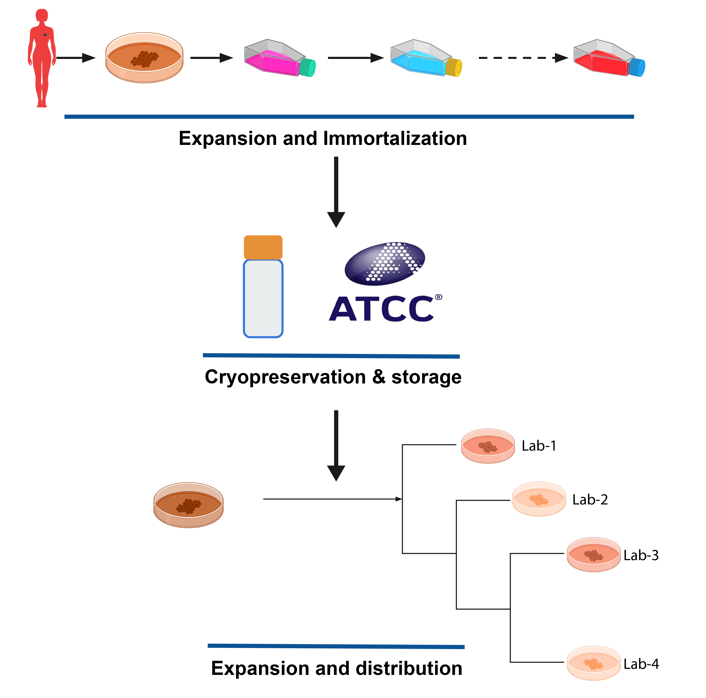
in vitro Pharmacogenomics
When studying Pharmacogenomics in vitro, the design of the experiment usually involves doing two things in parallel: Each cell line in the study is profiled on a molecular level, which can include measuring DNA level aberations such as SNVs and copy number changes, RNA expression levels, DNA methylation, and protein expression. In parallel, the cell lines undergo a viability based drug screen, where cell lines are treated with a panel of drugs, over a range of concentrations, and the growth of each cell line is compared to an untreated control.
The variable response to drug treatement across different cell lines is then compared with the molecular states of the cells, using machine learning or statistical approaches to discern which molecular features are predictive of the observed drug response.
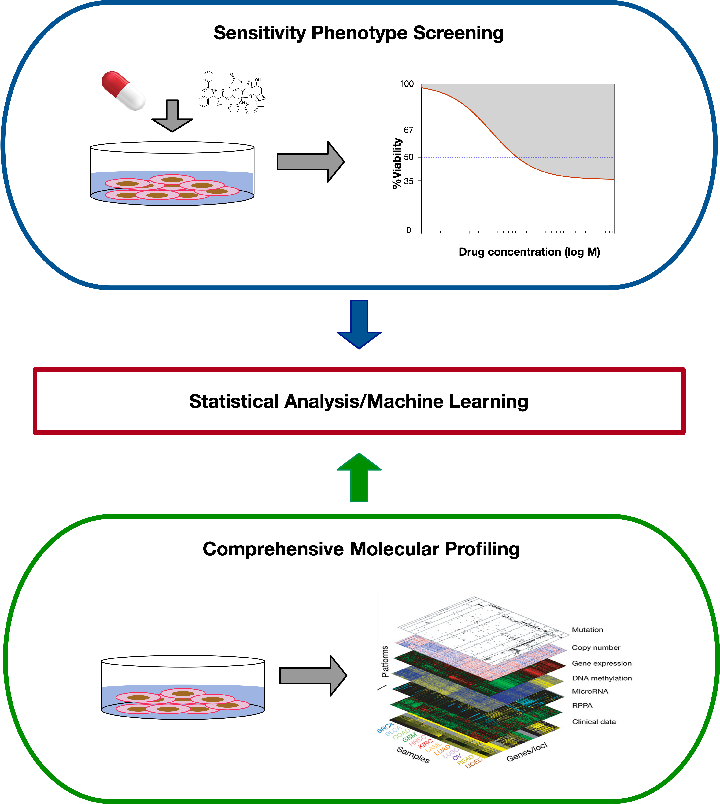
Radiogenomics
Radiogenomics follows a very similar design to Pharmacogenomics. The main difference is the form of the treatment applied to cells - in Pharmacogenomics, small molecule treatments are studied, while in radiogenomics, the treatement is irradiation of the cells. While the design of the study is similar, the difference in treatement causes differences in how the response of cells is modelled and quantified, as we detail below.
Currently, there is only one major, high-throughput dataset looking at in vitro radiogenomics, the Cleveland Clinic dataset. In this dataset, gamma radiation was used as the treatment. Conceptually however, there is no reason why alpha and beta radiation could not be studied in a similar experimental setup.
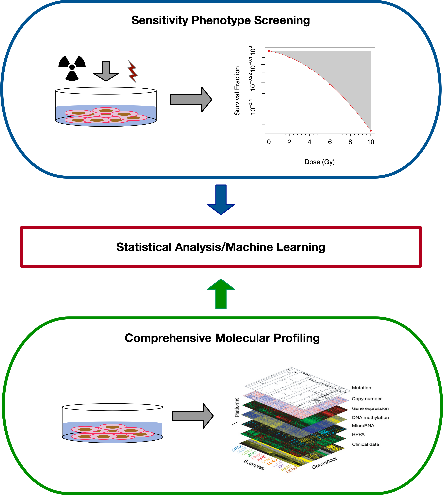
in vivo Pharmacogenomics
in vivo models play an important role in cancer drug discovery. Patent derived xenografts (PDXs) are commonly used in vivo models in cancer research. They have several advantages over cell lines: * PDXs are known to recapitulate tumor biology very well * PDXs maintain the cellular and histological structure of the source tumor * PDXs also keep tumor micro-enviroment and stromal elements * Genomic properties of the tumor are largely preserved from patient to PDX * Drug response of PDXs closely match the corresponding patient and clinical outcome
To create PDXs, cancerous tissues or cells from patients’ tumors are engrafted into immunodeficient mice (either subcutaneous or orthotopic engraftment). Once established, tumors from the PDXs can be passed from mouse to mouse, this is called passaging. For drug testing, PDXs were given a set drug dose at a set schedule (for example weekly). Change in tumor size is measured, usually physically using calipers. 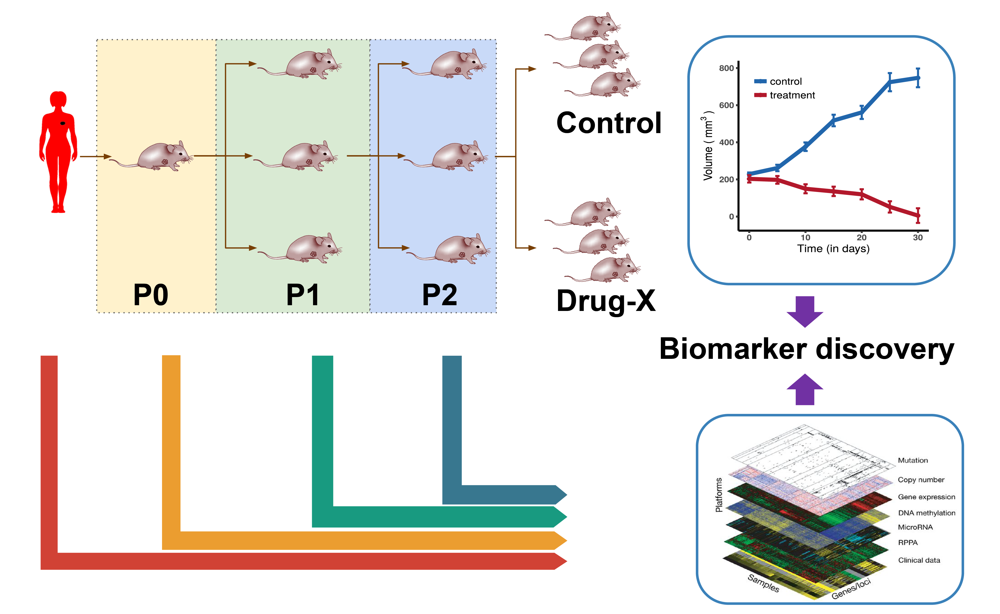
Data Storage and Access
PharmacoGx
PharmacoGx stores drug screening data together with molecular profiling of cell lines in an object called a PharmacoSet, or PSet for short. This object inherits for the CoreSet class defined in our package CoreGx, which abstracts the common functionality across our similar packages. The basic structure of a PharmacoSet is as follows:
PharmacoSet class diagram. Objects comprising a PharmacoSet are enclosed in boxes. First box indicates type and name of each object. Second box indicates the structure of an object or class. Third box shows accessor methods from PharmacoGx for that specific object. ‘=>’ represents return and specifies what is returned from that item or method.
Downloading PharmacoSet objects
Let us download the PSets used for this tutorial into our local working environment. A table of available PharmacoSet objects can be obtained by using the availablePSets function.
library(PharmacoGx) availablePSets()
If you look through the table produced by availablePSets, you will notice that each PSet object is downloaded from Zenodo - an Open Science project supported by the European Commision and CERN. Each PSet is assigned a DOI, which can be used to uniquely identify the data used in your analysis and retrieve it in the future for research reproducibility.
Any of the PharmacoSets in the table can then be downloaded by calling downloadPSet, which saves the datasets into a directory of the users choice, and returns the data into the R session. Lets try downloading the GDSC and CCLE PSets. The following code is included as an example, but not run, as the objects were preloaded onto the VM for the workshop.
GDSC <- downloadPSet("GDSC_2020(v1-8.2)", saveDir=file.path(".", "PSets")) CCLE <- downloadPSet("CCLE_2015", saveDir=file.path(".", "PSets"))
To load the datasets used in this workshop, we run the following code:
We can print out summary information about these datasets to the console, simply by evaluating them on the command line.
CCLE## Name: CCLE
## Date Created: Mon Apr 27 00:20:19 2020
## Number of cell lines: 1094
## RNA:
## Dim: 10012 1036
## Drug pertubation:
## Please look at pertNumber(cSet) to determine number of experiments for each drug-cell combination.
## Drug sensitivity:
## Number of Experiments: 11670
## Please look at sensNumber(cSet) to determine number of experiments for each drug-cell combination.RadioGx
The RadioSet has a structure similar to the PharmacoSet and also inherits from the CoreSet1 class . The radiation slot is implemented in RadioGx to hold relevant metadata about the type(s) of radiation used in the dose-response experiment, and is analogous to the drug slot in a PharmacoSet. The remainder of the slots mirror the PharmacoSet.
RadioSet class diagram. Objects comprising a RadioSet are enclosed in boxes. First box indicates type and name of each object. Second box indicates the structure of an object or class. Third box shows accessor methods from RadioGx for that specific object. ‘=>’ represents return and specifies what is returned from that item or method.
Downloading an RSet
RadioGx provides an interface similar to PharmacoGx and Xeva for downloading our curated versions of published datasets.
To get a list of available RadioSets, use:
RSets <- availableRSets()
| RadioSet_name | Date_updated | DOI |
|---|---|---|
| Cleveland | 2020/06/16 | 10.5281/zenodo.3899555 |
As the RadioGx package was only recently released, there is currently only one dataset available. Let’s download the ‘Cleveland’ RSet, which contains a highly curated version of the data from Yang et al., 2016.
For this workshop, we have subset this dataset. The entire dataset can be downloaded using the following:
Cleveland <- downloadRSet('Cleveland', saveDir='data')
Let’s load the RSet for this workshop.
data(Cleveland) Cleveland
## Name: Cleveland
## Date Created: Wed Oct 25 17:38:42 2017
## Number of cell lines: 303
## Number of radiation types: 1
## RNA:
## Dim: 20049 292
## RNASeq:
## Dim: 61958 292
## CNV:
## Dim: 24960 250
## Drug pertubation:
## Please look at pertNumber(rSet) to determine number of
## experiments for each radiation-cell combination.
## Drug sensitivity:
## Number of Experiments: 305
## Please look at sensNumber(rSet) to determine number of
## experiments for each radiation-cell combination.Similar to PharmacoGx and Xeva, a summary of the contents of the RadioSet is printed when calling a RadioSet in the console. We can see that the Cleveland RSet contains sensitivity information for 303 cell-lines treated with a single type of radiation. The RSet also contains rna2, rna-seq and cnv molecular data for a subset of available cell-lines.
Xeva
The R package Xeva connects the tumor volume vs. time data with genomics data in an R class called XevaSet. This allows users to analyze the data and perform biomarker discovery.
In a Xeva object, the experiment slot stores the data for each individual PDX/mouse. With the exception of tumor growth data (time vs. tumor volume), for each individual PDX/mouse, you can access metadata such as the patient’s age, sex, tissue histology, and passage information. All of this metadata is stored in the pdxModel class, where a unique ID called model.id is given to each PDX/mouse model. As for the tumor growth information, Xeva provides separate functions for retrieving and visualizing time vs. tumor volume data. We will see later how to get these data for an individual model.id, but first, let’s define some other terms that appear in the Xeva package.
A PDX experiment can be one of the two categories:
- treatment represents experiments in which the PDX receives some kind of drug (or drug combination)
- control represents experiments in which the PDX receives no drug
To see the effect of a drug, several replicate experiments are done for both the control and the treatment categories. In Xeva, a collection of PDX model.ids originating from the same patient is organized in batches (batch). A batch has two arms: control and treatment. This is illustrated in the figure below:
![A PDX experiment. The text under each of the PDX/mouse (ie. m1, m2, p1, etc.) denotes the `model.id` in Xeva. In this example, three PDXs are delclared as control (m1, m2, and m3). Similarly, in the treatment arm, 3 PDXs are given the drug paclitaxel (p1, p2, and p3), 3 are given tamoxifen (t1, t2, and t3), and 3 are given binimetinib (b1, b2, b3). The PDXs in the control arm and one of the treatment arms together constitute a extit{batch}. For example, control arm models (m1, m2, and m3) and treatment arm models (t1,t2, and t3) together create a batch called batch-2.](Xeva_batch_2.png)
A PDX experiment. The text under each of the PDX/mouse (ie. m1, m2, p1, etc.) denotes the model.id in Xeva. In this example, three PDXs are delclared as control (m1, m2, and m3). Similarly, in the treatment arm, 3 PDXs are given the drug paclitaxel (p1, p2, and p3), 3 are given tamoxifen (t1, t2, and t3), and 3 are given binimetinib (b1, b2, b3). The PDXs in the control arm and one of the treatment arms together constitute a extit{batch}. For example, control arm models (m1, m2, and m3) and treatment arm models (t1,t2, and t3) together create a batch called batch-2.
Downloading Xevaset objects
Several XevaSet objects can be obtained by using the downloadXevaSet function.
library(Xeva) Xeva::downloadXevaSet()
## XevaSet.Name
## 1 PDXE_BRCA
## 2 PDXE_CM
## 3 PDXE_CRC
## 4 PDXE_NSCLC
## 5 PDXE_PDAC
## 6 PDXE
## Description
## 1 XevaSet of breast cancer PDXs from the PDXE dataset. Source: Gao et al., Nature Medicine, 2015
## 2 XevaSet of cutaneous melanoma (CM) PDXs from the PDXE. Source: Gao et al., Nature Medicine, 2015
## 3 XevaSet of colorectal cancer (CRC) PDXs from the PDXE. Source: Gao et al., Nature Medicine, 2015
## 4 XevaSet of non-small-cell lung carcinoma (NSCLC) PDXs from the PDXE. Source: Gao et al., Nature Medicine, 2015
## 5 XevaSet of pancreatic ductal carcinoma (PDAC) PDXs from the PDXE. Source: Gao et al., Nature Medicine, 2015
## 6 XevaSet of PDXE dataset containing all tissue type. Source: Gao et al., Nature Medicine 2015
## Available.Molecular.Profiles Date.Updated
## 1 RNASeq,mutation,cnv Fri Mar 15 16:58:41 2019
## 2 RNASeq,mutation,cnv Fri Mar 15 17:00:39 2019
## 3 RNASeq,mutation,cnv Fri Mar 15 17:01:15 2019
## 4 RNASeq,mutation,cnv Fri Mar 15 16:59:51 2019
## 5 RNASeq,mutation,cnv Fri Mar 15 17:02:20 2019
## 6 RNASeq,mutation,cnv Fri Mar 15 16:53:26 2019
## URL
## 1 https://www.pmgenomics.ca/bhklab/sites/default/files/downloads/XevaSets/data/PDXE_BRCA.rds
## 2 https://www.pmgenomics.ca/bhklab/sites/default/files/downloads/XevaSets/data/PDXE_CM.rds
## 3 https://www.pmgenomics.ca/bhklab/sites/default/files/downloads/XevaSets/data/PDXE_CRC.rds
## 4 https://www.pmgenomics.ca/bhklab/sites/default/files/downloads/XevaSets/data/PDXE_NSCLC.rds
## 5 https://www.pmgenomics.ca/bhklab/sites/default/files/downloads/XevaSets/data/PDXE_PDAC.rds
## 6 https://www.pmgenomics.ca/bhklab/sites/default/files/downloads/XevaSets/data/PDXE.rdsThe following chunk loads the dataset used in the tutorial and prints out its summary:
data(brca_full) brca <- brca_full
Examining and Extracting data of interest
There are many common functions between the datasets for extracting the data relevant to your analysis. PharmacoGx are RadioGx are the most similar, due to the large similarities in their experimental designs. For most of your work with the objects, we recommend you use the accessor functions implemented in the packages to access the data. These accessors are largely stable across versions, while the implementation in the background can change as datasets grow in size and complexity.
This section is meant both as an introduction, and as a reference to the most used accessors for each package.
CoreGx accessors
PharmacoGx and RadioGx share a lot of similarities in their object structure. This also means that a lot of the functions used to access the data provided in these objects can be accessed using the same interface.
In general, the PSet and RSet store three major categories of data: metadata/annotations, molecular data and radiation response data. These are demarcated in Fig. @ref(fig:pharmacoset) and Fig. @ref(fig:radioset) using green, blue and red, respectively. Accessor methods are available to retrieve all three kinds of data from a CoreSet; the accessor methods for each component are listed in the bottom most cell of each object in the class diagrams. We will discuss a subset of these methods now.
Accessing metadata
There are two major metadata slots in the CoreSet which are commonly useful for your analysis. The first is common between all the packages, the cell slot. This slot contains information about the cell lines which were profiled in the dataset. This information exists for all cell lines, if they exist in any of the molecular or sensitivity data included in the objects. Note that not all cell lines are profiled in all assays, which is one of the sources of complexity when analyzing data from large studies.
To access the cell line metadata, you can use the following accessors:
knitr::kable(cellInfo(CCLE)[1:3,1:3])
| cellid | link | CCLE.name | |
|---|---|---|---|
| 1321N1 | 1321N1 | http://www.broadinstitute.org/ccle/cell%20lines/1321N1_CENTRAL_NERVOUS_SYSTEM | 1321N1_CENTRAL_NERVOUS_SYSTEM |
| 143B | 143B | http://www.broadinstitute.org/ccle/cell%20lines/143B_BONE | 143B_BONE |
| 22Rv1 | 22Rv1 | http://www.broadinstitute.org/ccle/cell%20lines/22RV1_PROSTATE | 22RV1_PROSTATE |
knitr::kable(cellInfo(Cleveland)[1:3,1:3])
| cellid | tissueid | CellLine | |
|---|---|---|---|
| SK-N-FI | SK-N-FI | autonomic_ganglia | SKNFI |
| SK-N-AS | SK-N-AS | autonomic_ganglia | SKNAS |
| CHP-212 | CHP-212 | autonomic_ganglia | CHP212 |
The standardized identifiers for those cell lines across our packages are the row names of this object. For convenience, they are accessible through the cellNames function:
head(cellNames(CCLE))
## [1] "1321N1" "143B" "22Rv1" "23132/87" "253J" "253J-BV"For example, here we can use the cellInfo function to pull out the tissue of origin for each cell line in the CCLE dataset. The tissueid column is standard for PSets, and should be present in all objects.
mycol <- c("#8dd3c7","#ffffb3","#bebada","#fb8072","#80b1d3","#fdb462", "#b3de69","#fccde5","#d9d9d9","#bc80bd","#ccebc5","#ffed6f", "#a6cee3","#1f78b4","#b2df8a","#33a02c","#fb9a99","#e31a1c", "#fdbf6f","#ff7f00","#cab2d6","#6a3d9a","#ffff99","#b15928") pie(table(CCLE@cell[,"tissueid"]), col=mycol, main="Tissue types", radius=1, cex=0.8)
Tissue of origin of cell lines in CCLE study
The other important metadata slot will vary across the two packages, being called drug in PharmacoGx, and radiation in RadioGx. They are discussed just below.
The CoreSet also includes annotations, which keep track of metadata about the creation of the CoreSet object itself, and curation, which keeps track of the remapping of identifiers from those used in the original study to those in the object.
Accessing molecular data
Molecular data are contained in the molecularProfiles slot.
# Get the list (equivalent to @molecularProfiles, except that it is robust to changes in CoreSet structure ## PSet str(molecularProfilesSlot(CCLE), max.level=2)
## List of 1
## $ rna:Formal class 'SummarizedExperiment' [package "SummarizedExperiment"] with 5 slots## RSet str(molecularProfilesSlot(Cleveland), max.level=2)
## List of 4
## $ rna :Formal class 'SummarizedExperiment' [package "SummarizedExperiment"] with 5 slots
## $ rnaseq :Formal class 'SummarizedExperiment' [package "SummarizedExperiment"] with 5 slots
## $ mutation:Formal class 'SummarizedExperiment' [package "SummarizedExperiment"] with 5 slots
## $ cnv :Formal class 'SummarizedExperiment' [package "SummarizedExperiment"] with 5 slots# Get the names from the list mDataNames(CCLE)
## [1] "rna"mDataNames(Cleveland)
## [1] "rna" "rnaseq" "mutation" "cnv"All molecular data in any class inheriting from CoreSet is contained in a SummarizedExperiment object. While SummarizedExperiment comes with it’s own set of accessors, we recommend using available RadioGx and PharmacoGx accessor methods as it allows your scripts to be robust to future changes in the structure of a CoreSet object. Below, we demonstrate each method with an RSet, but encourage you to try them on the PSets as well. They should all work!
# Get sample metadata phenoInf <- phenoInfo(Cleveland, 'cnv')
To keep the document formatted nicely, the following tables have been subset to the first three rows and columns.
| Sample_title | Sample_geo_accession | Sample_status |
|---|---|---|
| A2780 | GSM887918 | Public on Mar 20 2012 |
| OVCAR-4 | GSM888565 | Public on Mar 20 2012 |
| VMRC-RCZ | GSM888829 | Public on Mar 20 2012 |
# Get feature metadata featInfo <- featureInfo(Cleveland, 'rna')
| Probe | EnsemblGeneId | EntrezGeneId |
|---|---|---|
| ENSG00000000003_at | ENSG00000000003 | 7105 |
| ENSG00000000005_at | ENSG00000000005 | 64102 |
| ENSG00000000419_at | ENSG00000000419 | 8813 |
# Access the moleclar feature data mProf <- molecularProfiles(Cleveland, 'rnaseq')
| G20461.HSC-3.2 | G20463.C2BBe1.2 | G20466.5637.2 | |
|---|---|---|---|
| ENSG00000000003 | 4.527 | 5.860 | 5.394 |
| ENSG00000000005 | 0.000 | 0.070 | 0.000 |
| ENSG00000000419 | 6.314 | 7.303 | 6.140 |
Accessing response data
Data for treatment response can also be accessed the same way across PharmacoGx and RadioGx. The difference between the two packages is in the data itself, and the models applied to the data, discussed below. Here is a quick summary of accessor functions for response data.
# Get sensitivity slot sens <- sensitivitySlot(CCLE)
names(sens)
## [1] "info" "raw" "profiles" "n"# Get sensitivity raw data sensRaw <- sensitivityRaw(CCLE)
# Get sensitivity raw data knitr::kable(sensRaw[,,2][1:3, 1:3])
| doses1 | doses2 | doses3 | |
|---|---|---|---|
| drugid_AEW541_1321N1 | 108.67 | 111.00 | 102.16 |
| drugid_AEW541_22Rv1 | 100.94 | 112.50 | 86.00 |
| drugid_AEW541_42-MG-BA | 108.91 | 108.39 | 96.50 |
# Get sensitivity profiles sensProf <- sensitivityProfiles(CCLE)
knitr::kable(sensProf[1:3, 1:3])
| ic50_published | aac_published | amax_published | |
|---|---|---|---|
| drugid_AEW541_1321N1 | 8.000000 | 0.0873750 | -42.55801 |
| drugid_AEW541_22Rv1 | 2.329924 | 0.2205000 | -71.58934 |
| drugid_AEW541_42-MG-BA | 2.682130 | 0.1144375 | -63.49137 |
# Get sensitivity info sensInfo <- sensitivityInfo(CCLE)
knitr::kable(sensInfo[1:3, 1:3])
| cellid | drugid | nbr.conc.tested | |
|---|---|---|---|
| drugid_AEW541_1321N1 | 1321N1 | Nvp-aew541 | 8 |
| drugid_AEW541_22Rv1 | 22Rv1 | Nvp-aew541 | 8 |
| drugid_AEW541_42-MG-BA | 42-MG-BA | Nvp-aew541 | 8 |
PharmacoGx Drug Metadata
In PharmacoGx, metadata about the compounds used can be accessed through the drugInfo accessor. This works very similar to the cellInfo function.
| Compound..code.or.generic.name. | Compound..brand.name. | Target.s. | |
|---|---|---|---|
| Crizotinib | PF-2341066 | Crizotinib | c-MET, ALK |
| Dovitinib | TKI258 | Dovitinib | EGFR, FGFR1, PDGFRbeta, VEGFR-1, KDR |
| Erlotinib | Erlotinib | Tarceva | EGFR |
Drug names are also accessed as one would expect:
drugNames(CCLE)
## [1] "Crizotinib" "Dovitinib" "Erlotinib" "Irinotecan"
## [5] "L-685458" "Lapatinib" "LBW242" "Nilotinib"
## [9] "Nutlin-3" "Nvp-aew541" "Nvp-tae 684" "Paclitaxel"
## [13] "Palbociclib" "Panobinostat" "PD-0325901" "Pha-665752"
## [17] "PLX4720" "Raf265(chir-265)" "Saracatinib" "Selumetinib"
## [21] "Sorafenib" "Tanespimycin" "Topotecan" "Vandetanib"Radiation Metadata
A unique slot to RadioGx, radiation has additional accessor methods to retrieve the radiation types used in a given sensitivity experiment.
# Get the radiation info data.frame from an RSet radInf <- radiationInfo(Cleveland)
knitr::kable(radInf)
| X.radiation. | |
|---|---|
| radiation | radiation |
Currently, only one type of radiation has been used in an RSet. However, we hope to add new RSets covering a wider range of radiation sensitivity and perturbation experiments in the near future. The following method is also available to retrieve the radiation types as a character vector instead of a data.frame.
radTypes <- radiationTypes(Cleveland) radTypes
## [1] "radiation"Subsetting PharmacoSets
PSets can be subsetted by refering directly to the drugs and cell lines you want to keep in the dataset. For example, we can subset the GDSC PSet in the following ways:
print(GDSC)
## Name: GDSC_v1
## Date Created: Fri Jun 5 20:29:32 2020
## Number of cell lines: 1064
## RNA:
## Dim: 5947 789
## Drug pertubation:
## Please look at pertNumber(cSet) to determine number of experiments for each drug-cell combination.
## Drug sensitivity:
## Number of Experiments: 6890
## Please look at sensNumber(cSet) to determine number of experiments for each drug-cell combination.## [1] "Paclitaxel"print(subsetTo(GDSC, drugs="Erlotinib"))
## Name: GDSC_v1
## Date Created: Fri Jun 5 20:29:32 2020
## Number of cell lines: 824
## RNA:
## Dim: 5947 789
## Drug pertubation:
## Please look at pertNumber(cSet) to determine number of experiments for each drug-cell combination.
## Drug sensitivity:
## Number of Experiments: 511
## Please look at sensNumber(cSet) to determine number of experiments for each drug-cell combination.print(GDSC["YT","Erlotinib"])
## Name: GDSC_v1
## Date Created: Fri Jun 5 20:29:32 2020
## Number of cell lines: 1
## RNA:
## Dim: 5947 0
## Drug pertubation:
## Please look at pertNumber(cSet) to determine number of experiments for each drug-cell combination.
## Drug sensitivity:
## Number of Experiments: 1
## Please look at sensNumber(cSet) to determine number of experiments for each drug-cell combination.As an exercise, lets manually compute the number of overlaping cell lines between CCLE and GDSC. Try it yourself!
If you noticed as you completed the previous exercise, cell line and drug names are standardized between PSets downloaded using the downloadPSet function. This is the major benefit in working with the pre-curated objects: entities follow a standardized naming scheme, which was chosen to be human readable whenever possible.
PharmacoGx also implements a convenience function to intersect PSets:
common <- intersectPSet(list(CCLE, GDSC), intersectOn=c("cell.lines")) print(common)
Xeva
The structure of Xeva is different from the CoreGx structure. As such, many of the accessor functions are also different.
As mentioned earlier, Xeva stores metadata for each individual PDX model. We can retrieve the meta-information about each PDX, such as number of models and tissue type, using:
## [1] 849 5brca.mod[1:4, ]
## model.id tissue tissue.name patient.id drug
## X.1004.BG98 X.1004.BG98 BRCA Breast Cancer X-1004 BGJ398
## X.1004.biib X.1004.biib BRCA Breast Cancer X-1004 binimetinib
## X.1004.BK20 X.1004.BK20 BRCA Breast Cancer X-1004 BKM120
## X.1004.BY19 X.1004.BY19 BRCA Breast Cancer X-1004 BYL719The output shows that the brca dataset contains 849 PDX models. We can also see the time vs. tumor volume data for a model using:
model.data <- getExperiment(brca, model.id = "X.1004.BG98") head(model.data)
## model.id drug.join.name time volume body.weight volume.normal
## 1 X.1004.BG98 BGJ398 0 199.7 28.2 0.0000000
## 2 X.1004.BG98 BGJ398 2 181.9 28.0 -0.0891337
## 3 X.1004.BG98 BGJ398 5 172.7 28.4 -0.1352028
## 4 X.1004.BG98 BGJ398 9 129.6 27.2 -0.3510265
## 5 X.1004.BG98 BGJ398 12 91.3 26.7 -0.5428142
## 6 X.1004.BG98 BGJ398 16 117.1 26.2 -0.4136204Similarly, for batch names, we can obtain all predefined batch names using:
batch.name <- batchInfo(brca) batch.name[1:4]
## [1] "X-1004.BGJ398" "X-1004.binimetinib" "X-1004.BKM120"
## [4] "X-1004.BYL719"The information about a can be shown using:
batchInfo(brca, batch = "X-1004.binimetinib")
## $`X-1004.binimetinib`
## name = X-1004.binimetinib
## control = X.1004.uned
## treatment = X.1004.biibHere, for the batch named X-1004.binimetinib, we can see that the control sample is X.1004.uned and the treatment sample is X.1004.biib.
Visualizing and modeling sensitivity data
Working with Dose Response data from PSets
Plotting Drug Dose Response Data
Drug-Dose response data included in the PharmacoSet objects can be conviniently plotted using the drugDoseResponseCurve function. Given a list of PharmacoSets, a drug name and a cell name, it will plot the drug dose response curves for the given cell-drug combination in each dataset, allowing direct comparisons of data between datasets.
cells <- c("SK-MEL-2","697","NCI-H1666") # par(mfrow=c(1, 3), pty = "s") drugDoseResponseCurve(drug="Lapatinib", cellline=cells[1], pSets=list(CCLE, GDSC), plot.type="Actual", legends.label="aac_published")
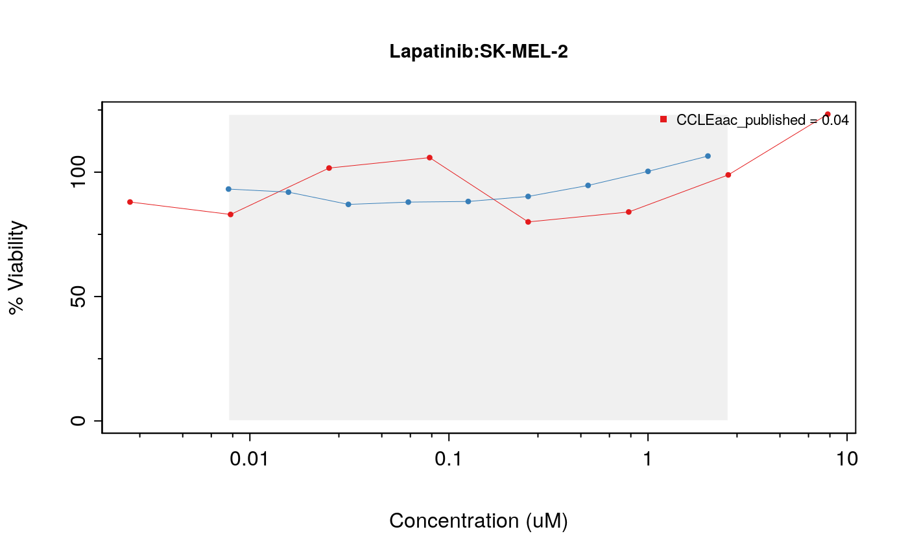
drugDoseResponseCurve(drug="Lapatinib", cellline=cells[2], pSets=list(CCLE, GDSC), plot.type="Actual", legends.label="aac_published")
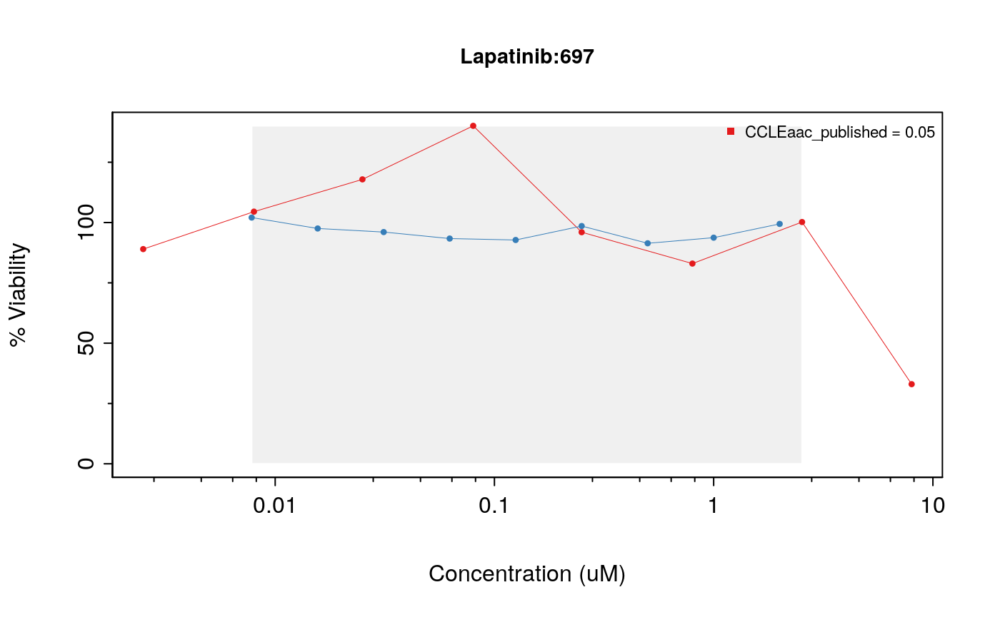
drugDoseResponseCurve(drug="Lapatinib", cellline=cells[3], pSets=list(CCLE, GDSC), plot.type="Actual", legends.label="aac_published")
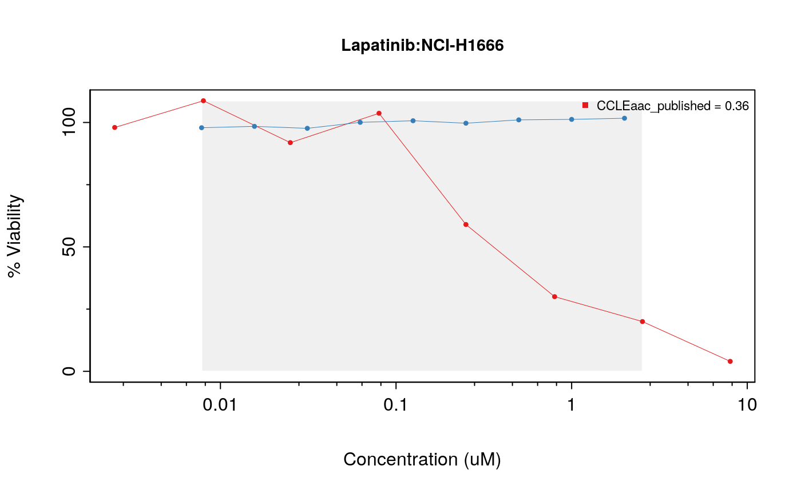
The function drugDoseResponseCurve can also be used to plot your own drug dose response curves, as follows:
concentrations <- 1/2^seq(0,8) * 1 viabilities <- c(0, 33.3, 60, 77.8, 88.2, 93.9, 96.9, 98.4, 99.2) drugDoseResponseCurve(concentrations = list("Exp 1" = concentrations), viabilities = list("Exp 1" = viabilities))
## Warning in sanitizeInput(concentrations[[i]], viabilities[[i]], conc_as_log =
## conc_as_log, : Concentration Values were unsorted. Sorting concentration and
## ordering viability in same order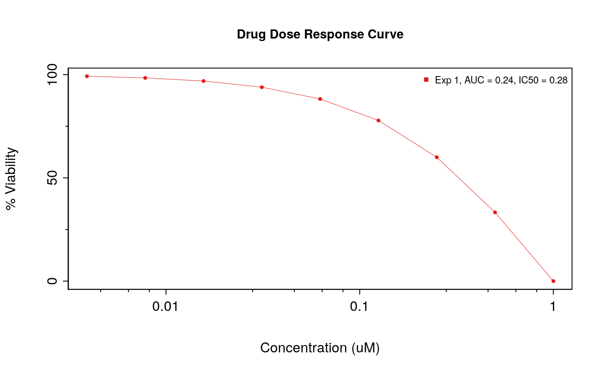
Fitting Drug Dose Response Curves
One of the core tasks implemented in PharmacoGx is the fitting of Hill Curve Models to dose-response data. In PharmacoGx, we use the 3 Parameter Hill Curve function as our model of drug response in cancer cell lines:
\[y = E_\infty + \frac{1-E_\infty}{1 + (\frac{x}{EC50})^{HS}}\] This is a log-logistic model, meaning that it takes the form of a logistic curve when x is on the log scale. The three parameters are: \(E_\infty\), which is the maximal inhibition predicted at infinite concetration of the drug (the right asymptote); \(EC50\), which is the inflection point of the logit, where the inhibition reaches 50% of the maximum; \(HS\), the Hill Slope, which is a measure of the cooperativity of binding. This parameter controls the steepness of the logit, and is interpreted based on its relation to 1. Values larger than 1 imply positive cooperativity in inhibition/binding of the target for the small molcule ligands, which values less than 1 imply negative cooperativity/antagonism.
To fit a Hill Slope model to your data in PharmacoGx, you can use the logLogisticRegression function, as below:
concentrations <- 1/2^seq(0,8) * 1 viabilities <- c(0, 33.3, 60, 77.8, 88.2, 93.9, 96.9, 98.4, 99.2) pars <- logLogisticRegression(conc = concentrations, viability = viabilities)
## Warning in sanitizeInput(conc = conc, viability = viability, conc_as_log =
## conc_as_log, : Concentration Values were unsorted. Sorting concentration and
## ordering viability in same orderprint(pars)
## $HS
## [1] 1.900066
##
## $E_inf
## [1] 0
##
## $EC50
## [1] 0.2813364For all the data in PSets, this modeling has been precomputed and stored in the object, under sensitivityProfiles:
| E_inf | EC50 | HS | |
|---|---|---|---|
| drugid_AEW541_1321N1 | 38.47711 | 3.295213 | 0.9169196 |
| drugid_AEW541_22Rv1 | 13.95620 | 1.376470 | 0.8374151 |
| drugid_AEW541_42-MG-BA | 36.28378 | 1.723197 | 2.9099240 |
| drugid_AEW541_5637 | 0.00000 | 5.192732 | 1.0883419 |
| drugid_AEW541_639-V | 30.29307 | 1.350122 | 0.6991911 |
Computing Summary Measures for DDRCs
Often with in vitro Pharmacogenomics data, we want to compare the drug sensitivity of a cell line to some omic feature. For this, we want to summarize the drug dose response curve into a single number representing the sensitivity of the cell line. The IC50 and Area Above the Curve are two convenient metrics for quantifying the observed drug sensitivity. If you noticed above, the drugDoseResponseCurve function computes them by default. In PharmacoGx, they can be computed manually as follows:
concentrations <- rev(1/2^seq(0,8) * 1) viabilities <- c(99.2, 98.4, 96.9, 93.9, 88.2, 77.8, 60, 33.3, 0) print(PharmacoGx::computeAUC(concentration = concentrations, viability = viabilities))
## [1] 23.68416print(PharmacoGx::computeIC50(concentration = concentrations, viability = viabilities))
## [1] 0.2813364In PharmacoGx, we call these measures sensitivity measures. PSets come with these measures precomputed, and accessible using the sensitivityProfiles function:
| ic50_published | aac_published | amax_published | aac_recomputed | ic50_recomputed | |
|---|---|---|---|---|---|
| drugid_AEW541_1321N1 | 8.000000 | 0.0873750 | -42.55801 | 0.0980082 | 16.332263 |
| drugid_AEW541_22Rv1 | 2.329924 | 0.2205000 | -71.58934 | 0.2132382 | 2.034710 |
| drugid_AEW541_42-MG-BA | 2.682130 | 0.1144375 | -63.49137 | 0.1215116 | 2.687672 |
| drugid_AEW541_5637 | 5.002314 | 0.1243550 | -62.35278 | 0.1087770 | 5.192732 |
| drugid_AEW541_639-V | 1.736181 | 0.1936250 | -51.95981 | 0.1834458 | 5.113119 |
| drugid_AEW541_697 | 4.260822 | 0.1087625 | -73.33379 | 0.1051855 | 4.254253 |
RadioGx
Fitting Linear Quadratic (LQ) Models
RadioGx provides a number of functions for analyzing dose response experiments. To use these functions, we must first fit a statistical model to the dose response data. Due to the nature of radiation treatment, the model used is different from the model in Pharmacogenomics. While Pharmacogenomics uses a log-logistic Hill Curve for modeling the dose-response relationship, Radiogenomics analysis traditionally uses a Linear Quadratic model. This is due to the different action of radiation treatment compared to compound inhibition of targets.
This package exports a function for fitting linear-quadratic models to dose response data. The function can be used with data contained in a RadioSet or with raw dose-response data.
# Extract raw sensitvity data from the RadioSet sensRaw <- sensitivityRaw(Cleveland)
str(sensRaw)
## num [1:305, 1:9, 1:2] 1 1 1 1 1 1 1 1 1 1 ...
## - attr(*, "dimnames")=List of 3
## ..$ : chr [1:305] "SK-N-FI_radiation_1" "SK-N-AS_radiation_3" "CHP-212_radiation_4" "MHH-NB-11_radiation_6" ...
## ..$ : chr [1:9] "doses1" "doses2" "doses3" "doses4" ...
## ..$ : chr [1:2] "Dose" "Viability"The data returned by sensitivityRaw(RSet) is a three dimensional array, but it can also be thought of as a set of experiment by treatment matrices. We can see by the dimnames of the third dimensions that the first matrix holds the radiation dose (in Gy) for each experiment, while the second matrix holds the viability measurements for the cell-line after each dose in the experimental series.
# Find a cancer cell-line of interest head(sensitivityInfo(Cleveland)$cellid)
## [1] "SK-N-FI" "SK-N-AS" "CHP-212" "MHH-NB-11" "SK-N-SH" "NB1"cancerCellLine <- sensitivityInfo(Cleveland)$cellid[1] print(cancerCellLine)
## [1] "SK-N-FI"# Get the radiation doses and associated survival data from clevelandSmall radiationDoses <- sensRaw[1, , 'Dose'] survivalFractions <- sensRaw[1, , 'Viability']
LQmodel <- linearQuadraticModel(D=radiationDoses, SF=survivalFractions) LQmodel
## alpha beta
## 0.15219719 0.01783452
## attr(,"Rsquare")
## [1] 0.9882769Above we see that LQmodel contains the alpha and beta coefficients for the dose response curve fit to the dose and viability data for the IMR-32 cancer cell-line. Based on the \(R^2\) attribute we can see that the model fit for this data is good, with 98.8% of observed variance explained by the model.
Calculating Dose-Response Metrics
RadioGx provides a number of functions for calculating common dose response metrics such as surviving fraction (SF), area under the curve (AUC) and dose at which only 10% of cancer cells survive (D10).
Some of these functions require the alpha and beta coefficients, as calculated above using the linearQuadraticModel function.
survFracAfter2Units <- computeSF2(pars=LQmodel) print(survFracAfter2Units)
## [1] 0.6867861dose10PercentSurv <- computeD10(pars=LQmodel) print(dose10PercentSurv)
## [1] 7.870413We see from the above code cell that after two units of radiation, 68.679% of cancer cells remain relative to the initial population. Conversely, using computeD10 we see that on average 7.87 units of radiation need to be administered to result in 10% cell-line survival (i.e., 90% of cancer cells are killed).
Other dose-response metrics can be computed directly using radiation dose and cancer cell viability data.
areaUnderDoseRespCurve <- computeAUC(D=radiationDoses, pars=LQmodel, lower=0, upper=1) print(areaUnderDoseRespCurve)
## [1] 2.872288In the above code block we compute the AUC for a dose-response curve between a dose of 0 to 1 Gy. This area can be interpreted as the total proportion of cells killed during the administration of 1 Gy of radiation.
Dose-Response Curves
The doseResponseCurve function can be used to generate plots of surviving fraction vs dose for radiation sensitivity experiments. In this example we provide raw data values to create the plot. When the plot.type is set to “Both”, a linear-quadratic model will also be fit to the supplied dose-response values.
doseResponseCurve( Ds=list("Experiment 1" = c(0, 2, 4, 6)), SFs=list("Experiment 1" = c(1,.6,.4,.2)), plot.type="Both" )
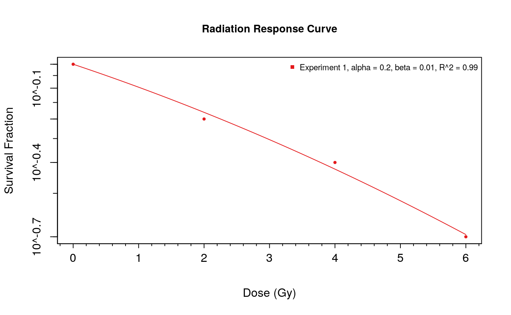
Additionally, doseResponseCurve can be used to create dose response curves directly from a curated RadioSet object. When utilizing this feature, a cell-line must be selected from the RadioSet. This can be done by name if you know which cell-line you are looking for. If you don’t know which cell-line you want to visualize, the available cell-lines can be explored using the cellInfo function.
doseResponseCurve( rSets=list(Cleveland), cellline=cellInfo(Cleveland)$cellid[3] )
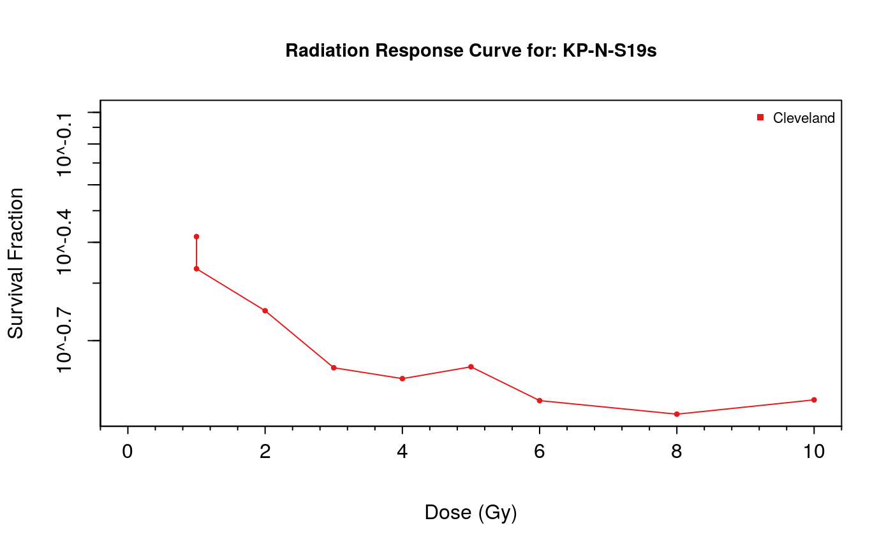
Xeva
Drug response in PDX models is usually not assessed in the same way as in vitro. Rather than looking at viability vs dose curves, one looks at tumour growth vs time curves, to see if the treatement with a drug can inhibit tumour growth or initiate tumour shrinkage and clearance. Given the increased complexity of a tumour growing within a living mouse, there is no canonical model that is fit to this data. Rather, there are several options for assessing response in these models, each with its pros and cons.
Visualizing Tumour Growth Curves
Xeva provides functions to visualize these PDX time vs. tumor volume curve.
plotPDX(object = brca, patient.id = "X-1004", drug = "BGJ398")
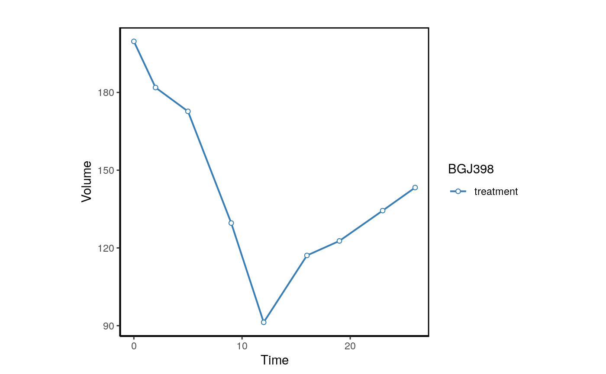
plotPDX(object=brca,patient.id="X-1004",drug="BGJ398",control.name="untreated")
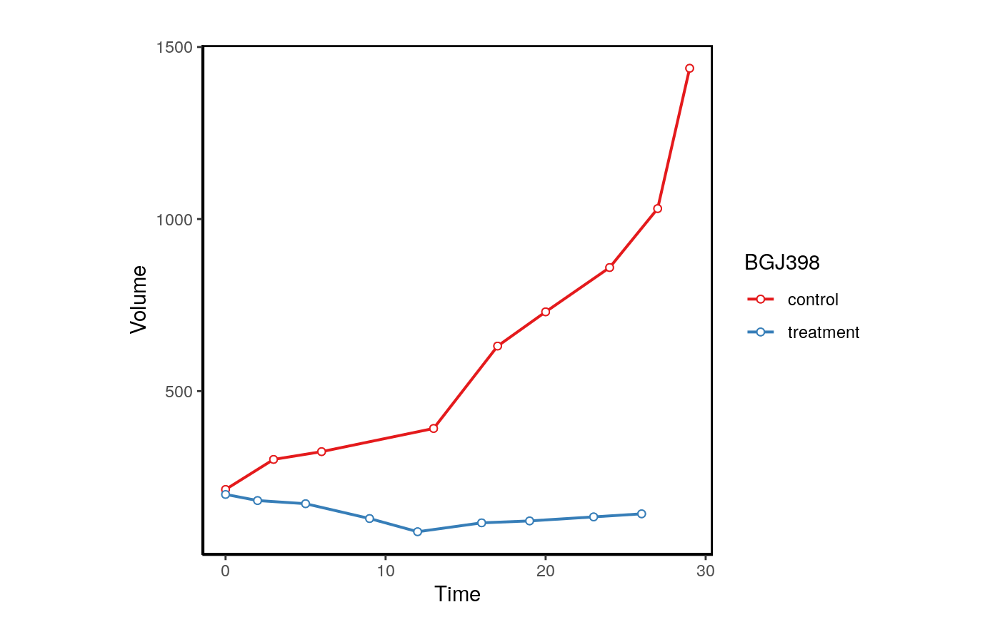
We can also plot the normalized volume.
plotPDX(object=brca,patient.id="X-1004",drug="BGJ398",control.name="untreated", vol.normal = TRUE)
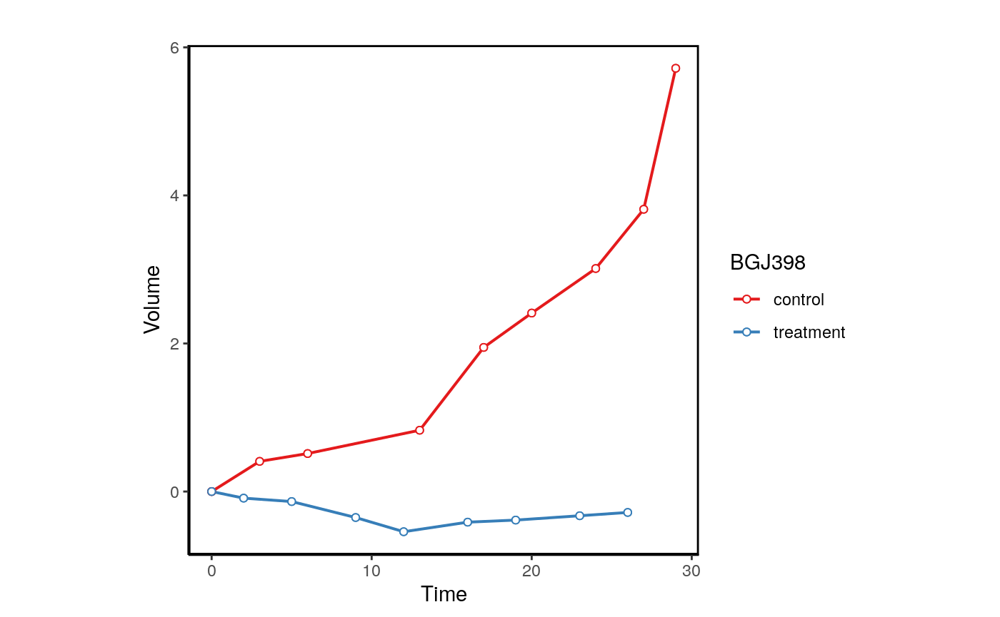
When replicates are avaliable Xeva can be used the visualize each model.
data("repdx") plotPDX(object=repdx,patient.id="P1",drug="treatment",control.name="Control", vol.normal = TRUE)
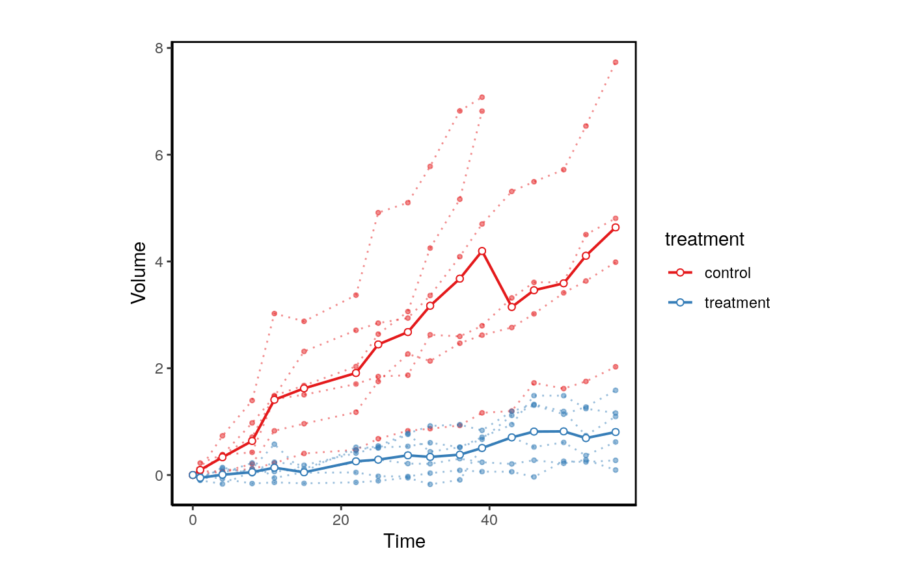
Quantifying PDX Drug Response
In Xeva several response computing functions such as mRECIST, slope, AUC etc. have been implemented. Drug response can be computed for PDX models as:
response(brca, model.id="X.1004.BG98", res.measure="mRECIST")
## computing mRECIST for X.1004.BG98## $volume.change
## [1] 0.00000 -8.91337 -13.52028 -35.10265 -54.28142 -41.36204 -38.55784
## [8] -32.69905 -28.24236
##
## $average.response
## [1] 0.000000 -4.456685 -7.477883 -14.384076 -22.363545 -25.529962 -27.391087
## [8] -28.054582 -28.075447
##
## $best.response
## [1] -54.28142
##
## $best.response.time
## [1] 12
##
## $best.average.response
## [1] -28.07545
##
## $best.average.response.time
## [1] 26
##
## $mRECIST
## [1] "PR"Drug response for all models is stored in the sensitivity slot and can be extracted using
brca.mr <- summarizeResponse(brca, response.measure = "mRECIST", group.by="patient.id")
We can visualize this matrix as:
plotmRECIST(brca.mr, control.name = "untreated")
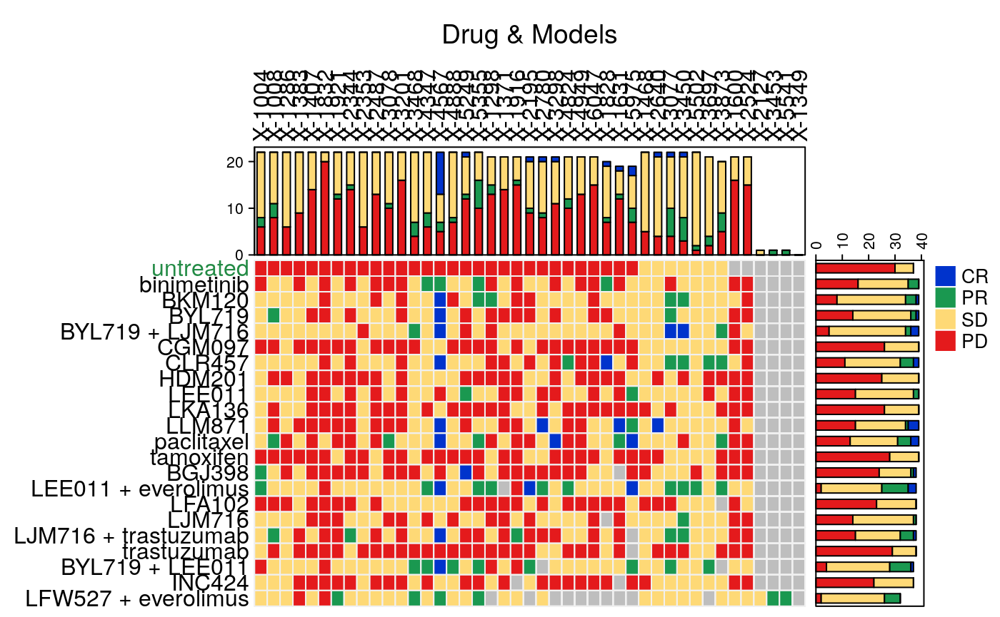
Summary Functions
PharmacoGx
Pharmacogenomics studies often contain many examples of either replicated or missing data. One of the most common tasks in preparing data for statistical or machine learning analysis is aligning your features and labels. To accelerate using Pharmacogenomics data for analysis, PharmacoGx contains two functions which create deduplicated matrices with missing data filled by NAs: summarizeSensitivityProfiles and summarizeMolecularProfiles. They create matrices which are drugs x cell lines and molecular features x cell lines, with any cell lines profiled for only sensitivity or molecular features padded with NA values. For the molecular profiles, the data are returned in a SummarizedExperiment object, while drug sensitivity data are returned as a matrix.
mol.prof <- PharmacoGx::summarizeMolecularProfiles(CCLE, "rna") sens.prof <- PharmacoGx::summarizeSensitivityProfiles(CCLE, "aac_recomputed")
dim(mol.prof)
## [1] 10012 1094dim(sens.prof)
## [1] 24 1094Below, we use the summarizeSensitivityProfiles function and ggplot to investigate the distributions of AUC values within CCLE.
library(ggplot2, verbose=FALSE)
## Warning: package 'ggplot2' was built under R version 4.0.1library(reshape2, verbose=FALSE) CCLE.aac <- PharmacoGx::summarizeSensitivityProfiles(CCLE, sensitivity.measure = "aac_recomputed") melted_data <- melt(CCLE.aac) NA_rows <- unique(which(is.na(melted_data), arr.ind=T)[,1]) melted_data <- melted_data[-NA_rows,] p <- ggplot(melted_data, aes(x=Var1,y=value)) + geom_boxplot(fill="gray") + theme(axis.text.x=element_text(angle=90,hjust=1)) + xlab("Drugs") + ylab("AAC") print(p)
Cells response to drugs in CCLE
RadioGx
Summarizing Sensitivity
To retrieve a radiation type by cell-line summary of a sensitivity experiment, we use the summarizeSensitivityProfiles function. This will return a matrix where rows are radiation type3, columns are cell-line and values are viability measurements summarized using summary.stat4. The sensitivity measure to summarize can be specified using sensitivity.measure5.
sensSummary <- RadioGx::summarizeSensitivityProfiles(Cleveland)
sensSummary[, 1:3]
## SK-N-FI SK-N-AS CHP-212
## 2.861642 3.258931 1.344093Summarizing Molecular Data
mprofSummary <- RadioGx::summarizeMolecularProfiles(Cleveland, mDataType='rna', summary.stat='median', fill.missing=FALSE)
mprofSummary## class: SummarizedExperiment
## dim: 20049 292
## metadata(3): experimentData annotation protocolData
## assays(2): exprs se.exprs
## rownames(20049): ENSG00000000003 ENSG00000000005 ... ENSG00000280439
## ENSG00000280448
## rowData names(7): Probe EnsemblGeneId ... BEST rownames
## colnames(292): SK-N-FI SK-N-AS ... VM-CUB-1 T.T
## colData names(25): samplename filename ... rownames tissueidDue to a lack of replicates in the Cleveland RSet, the returned SummarizedExperiment object contains the same information as the original. For other experiments with replicates, however, the result should contain one column per unique cell-line id. For ease of interoperability with the response data contained in an RSet, if fill.missing is FALSE empty columns for the cell-lines in the sensitivity experiment, but not in the molecular profile will be added to the SummarizedExperiment such that the dimensions are equal.
Xeva
Summarizing Molecular Data
As already seen above, Xeva provides a method to extract drug response data from XevaSets. Like PharmacoGx and RadioGx, the package also provides a method to extract the molecular data associated with a particular set of mice. For example, we can extract the RNAseq data for all the PDXs treated with trastuzumab, as below:
brca_trastuz <- Xeva::summarizeMolecularProfiles(brca, mDataType="RNASeq", drug = "trastuzumab")
Signature Generation and Biomarker Discovery
Drug Sensitivity Signatures
Finally, we will talk about some functions built into PharmacoGx to generate signatures of molecular features which correlate with response to particular compounds. In PharmacoGx, the main function to generate signatures of response across drugs is drugSensitivitySig. It takes as input a PSet, and the molecular data type you wish to use to generate the signatures, and computes the linear association between each feature and each drug response vector independently. The default of using all features, drugs and cell lines in the dataset can be modified with parameters detailed below.
At its core, drugSensitivitySig fits a nested linear model to the drug response data, using the molecular feature, as well as cell tissue of origin and batch effect as possible predictors. The function then uses ANOVA to judge whether including the molecular feature in the model leads to a statistically significant improvement in prediction accuracy (R^2). For more details on the implementation, we encourage readers to reference the PharmacoGx manuscript, or the vignettes included in the package.
Here, as an example, we will run drugSensitivitySig to generate a signature of response to Lapatinib and Erlotinib, two targetted therapies, from the GDSC data. We will do this with a random 10 genes measured in the expression matrix, as the full computation can take some time to complete.
## Extracting the first 100 gene names. featureInfo brings up the rowData of the "rna" SummarizedExperiment chosen.genes <- sample(rownames(featureInfo(GDSC, "rna"), 10)) sigs <- PharmacoGx::drugSensitivitySig(GDSC, "rna", sensitivity.measure = "aac_recomputed", drugs=c("Erlotinib", "Lapatinib"), features = chosen.genes)
Lets look at the head of the signature for the two drugs:
| estimate | se | n | tstat | fstat | pvalue | df | fdr | |
|---|---|---|---|---|---|---|---|---|
| ENSG00000196700 | -0.0010362 | 0.0549090 | 288 | -0.0188716 | 0.0003561 | 0.9849579 | 262 | 0.9980546 |
| ENSG00000168556 | -0.0916933 | 0.0562915 | 288 | -1.6289005 | 2.6533169 | 0.1045358 | 262 | 0.5675628 |
| ENSG00000135378 | 0.1108223 | 0.0657545 | 288 | 1.6853948 | 2.8405556 | 0.0931030 | 262 | 0.5523516 |
| ENSG00000162073 | -0.1035389 | 0.0573381 | 288 | -1.8057596 | 3.2607678 | 0.0721036 | 262 | 0.5037829 |
| ENSG00000204291 | 0.0232790 | 0.0580488 | 288 | 0.4010251 | 0.1608211 | 0.6887285 | 262 | 0.9234843 |
| ENSG00000177051 | -0.0765955 | 0.0597004 | 288 | -1.2829988 | 1.6460860 | 0.2006263 | 262 | 0.6892688 |
knitr::kable(x = head(as.data.frame(sigs[,2,])))
| estimate | se | n | tstat | fstat | pvalue | df | fdr | |
|---|---|---|---|---|---|---|---|---|
| ENSG00000196700 | -0.0195924 | 0.0563837 | 297 | -0.3474839 | 0.1207451 | 0.7284975 | 271 | 0.9338826 |
| ENSG00000168556 | 0.0298141 | 0.0571843 | 297 | 0.5213681 | 0.2718247 | 0.6025362 | 271 | 0.8970796 |
| ENSG00000135378 | 0.1623048 | 0.0659125 | 297 | 2.4624277 | 6.0635501 | 0.0144225 | 271 | 0.2732868 |
| ENSG00000162073 | -0.1072619 | 0.0575102 | 297 | -1.8650923 | 3.4785694 | 0.0632491 | 271 | 0.4785530 |
| ENSG00000204291 | -0.0437106 | 0.0587418 | 297 | -0.7441151 | 0.5537073 | 0.4574515 | 271 | 0.8278657 |
| ENSG00000177051 | -0.0443149 | 0.0607281 | 297 | -0.7297257 | 0.5324996 | 0.4661881 | 271 | 0.8315600 |
Radiation Sensitivity Signatures
The true usefulness of the RadioGx package comes from the ability to determine gene signatures for a cell-line from a sensitivity experiment. Cell-lines of interest to a given researcher can be selected and a molecular signature computed which correlates specific molecular features with a given sensitivity profile. Using this method one could identify signatures associated with either radio-sensitivity or radio-resistance. Combining this signature with drug response gene signatures from PharmacoGx, as will be done in the subsequent section, one can identify drugs which could augment the effectiveness of a given radiation signature. Perhaps more powerfully, drugs which target features associated with radio-resistance can be found, potentially synergistically increasing the overall effectiveness of the combined treatment. We must note however that this is an active area of research, and the examples provided are illustrative only. When conducting research in this field, care must be taken in choosing the right model systems, measures of sensitivity, and incorporating prior knowledge to differentiate promising hits from experimental artifacts.
protein_coding <- which(featInfo$GeneBioType %in% "protein_coding") radSensSig <- radSensitivitySig(Cleveland, mDataType='rna', nthread=16, features=fNames(Cleveland, 'rna')[protein_coding])
## Computing radiation sensitivity signatures...# Convert to a data.frame radSensSigDF <- data.frame(radSensSig@.Data[, , ], row.names=rownames(radSensSig)) # Order by estimated correlation radSensSigDF <- radSensSigDF[order(radSensSigDF$estimate, decreasing=TRUE), ] # Subset to only significant FDR radSensSigDF <- radSensSigDF[radSensSigDF$fdr < 0.05, ]
radSensGeneSig <- head(radSensSigDF, 10) radResistGeneSig <- tail(radSensSigDF[radSensSigDF$fdr < 0.05, ], 10)
knitr::kable(radSensGeneSig, caption="Top 10 Gene Markers of Radio-sensitivity in the Cleveland RSet")
| estimate | se | n | tstat | fstat | pvalue | df | fdr | |
|---|---|---|---|---|---|---|---|---|
| ENSG00000151117 | 0.3976407 | 0.0595970 | 292 | 6.672160 | 44.51772 | 0.00e+00 | 269 | 0.0000023 |
| ENSG00000132746 | 0.3523199 | 0.0708910 | 292 | 4.969883 | 24.69974 | 1.20e-06 | 269 | 0.0035660 |
| ENSG00000070731 | 0.3286902 | 0.0659831 | 292 | 4.981431 | 24.81465 | 1.10e-06 | 269 | 0.0035660 |
| ENSG00000124664 | 0.3165793 | 0.0771910 | 292 | 4.101246 | 16.82022 | 5.45e-05 | 269 | 0.0139882 |
| ENSG00000148513 | 0.3104869 | 0.0616191 | 292 | 5.038810 | 25.38960 | 9.00e-07 | 269 | 0.0035660 |
| ENSG00000183888 | 0.3100016 | 0.0647328 | 292 | 4.788945 | 22.93399 | 2.80e-06 | 269 | 0.0040761 |
| ENSG00000159763 | 0.3055805 | 0.0602806 | 292 | 5.069301 | 25.69781 | 7.00e-07 | 269 | 0.0035660 |
| ENSG00000110484 | 0.2972925 | 0.0613169 | 292 | 4.848461 | 23.50757 | 2.10e-06 | 269 | 0.0040761 |
| ENSG00000145817 | 0.2946001 | 0.0610280 | 292 | 4.827293 | 23.30276 | 2.30e-06 | 269 | 0.0040761 |
| ENSG00000110171 | 0.2937235 | 0.0659120 | 292 | 4.456296 | 19.85857 | 1.22e-05 | 269 | 0.0081632 |
knitr::kable(radResistGeneSig, caption="Top 10 Gene Markers of Radio-resistance in the Cleveland RSet")
| estimate | se | n | tstat | fstat | pvalue | df | fdr | |
|---|---|---|---|---|---|---|---|---|
| ENSG00000106346 | -0.2650079 | 0.0583550 | 292 | -4.541304 | 20.62344 | 8.40e-06 | 269 | 0.0068289 |
| ENSG00000213160 | -0.2652584 | 0.0620200 | 292 | -4.276979 | 18.29255 | 2.63e-05 | 269 | 0.0109258 |
| ENSG00000129351 | -0.2659001 | 0.0564573 | 292 | -4.709758 | 22.18182 | 4.00e-06 | 269 | 0.0049492 |
| ENSG00000056277 | -0.2680220 | 0.0584539 | 292 | -4.585184 | 21.02392 | 7.00e-06 | 269 | 0.0066171 |
| ENSG00000164167 | -0.2740782 | 0.0568968 | 292 | -4.817111 | 23.20455 | 2.40e-06 | 269 | 0.0040761 |
| ENSG00000105255 | -0.2816045 | 0.0680826 | 292 | -4.136217 | 17.10829 | 4.72e-05 | 269 | 0.0132329 |
| ENSG00000101974 | -0.2837507 | 0.0573454 | 292 | -4.948095 | 24.48364 | 1.30e-06 | 269 | 0.0035660 |
| ENSG00000254726 | -0.2863624 | 0.0605707 | 292 | -4.727737 | 22.35150 | 3.70e-06 | 269 | 0.0049416 |
| ENSG00000189007 | -0.2894647 | 0.0625417 | 292 | -4.628346 | 21.42158 | 5.70e-06 | 269 | 0.0062083 |
| ENSG00000166582 | -0.3080795 | 0.0642025 | 292 | -4.798563 | 23.02620 | 2.70e-06 | 269 | 0.0040761 |
in vivo Biomarker Discovery
For in vivo biomarker discovery we need the genomic data along with drug response. As discussed above, this can be extracted using the summarizeMolecularProfiles function. The output will be an ExpressionSet object which contains genomic data and drug response.
suppressMessages(library(Biobase)) dr.mol = summarizeMolecularProfiles(brca, drug="BGJ398", mDataType="RNASeq", tissue= "BRCA", sensitivity.measure="best.average.response") exprs(dr.mol)[1:5, 1:3]
## X.1004.BG98 X.1008.BG98 X.1298.BG98
## A1BG 1.90689060 3.31759350 2.28095631
## A1BG-AS1 1.79908731 2.08746284 1.83995959
## A1CF 0.02856915 0.04264434 0.01435529
## A2LD1 2.55336050 0.85598970 2.04963077
## A2M 0.01435529 6.17332735 0.00000000## model.id best.average.response
## X.1004.BG98 X.1004.BG98 -28.07545
## X.1008.BG98 X.1008.BG98 14.56386
## X.1298.BG98 X.1298.BG98 13.79941
## X.1371.BG98 X.1371.BG98 49.50584
## X.1383.BG98 X.1383.BG98 10.26197The output can be used for further inquiry such as correlation analysis.
genes <- rownames(exprs(dr.mol)) .computeCorTestDF <- function(g, dr.mol) { cr <- cor.test(exprs(dr.mol)[g, ], pData(dr.mol)$best.average.response) return(data.frame(gene=g, cor=cr$estimate, p=cr$p.value)) } corDataFrames <- lapply(genes, .computeCorTestDF, dr.mol=dr.mol)
## Warning in cor(x, y): the standard deviation is zero
## Warning in cor(x, y): the standard deviation is zero
## Warning in cor(x, y): the standard deviation is zero
## Warning in cor(x, y): the standard deviation is zero
## Warning in cor(x, y): the standard deviation is zero
## Warning in cor(x, y): the standard deviation is zero
## Warning in cor(x, y): the standard deviation is zero
## Warning in cor(x, y): the standard deviation is zero
## Warning in cor(x, y): the standard deviation is zero
## Warning in cor(x, y): the standard deviation is zero
## Warning in cor(x, y): the standard deviation is zero
## Warning in cor(x, y): the standard deviation is zero
## Warning in cor(x, y): the standard deviation is zero
## Warning in cor(x, y): the standard deviation is zero
## Warning in cor(x, y): the standard deviation is zero
## Warning in cor(x, y): the standard deviation is zero
## Warning in cor(x, y): the standard deviation is zero
## Warning in cor(x, y): the standard deviation is zero
## Warning in cor(x, y): the standard deviation is zero
## Warning in cor(x, y): the standard deviation is zero
## Warning in cor(x, y): the standard deviation is zero
## Warning in cor(x, y): the standard deviation is zero
## Warning in cor(x, y): the standard deviation is zero
## Warning in cor(x, y): the standard deviation is zero
## Warning in cor(x, y): the standard deviation is zero## gene cor p
## cor A1BG -0.04245902 0.80296154
## cor1 A1BG-AS1 -0.02801888 0.86924726
## cor2 A1CF 0.03423020 0.84059963
## cor3 A2LD1 -0.01251831 0.94138025
## cor4 A2M 0.06572518 0.69913588
## cor5 A2ML1 -0.40761117 0.01227567Below, we will use this functionality of Xeva to see if an association discovered in vitro holds up in an in vivo setting.
Integrative Analysis across Packages and Disciplines
In this section, we will go through two short examples of analysis which integrates across the packages presented above, highlighting the use of these packages to explore hypotheses across domains.
Comparing Sensitivity Signatures between Radiation and Drug Response
Both RadioGx and PharmacoGx allow you to compute signatures of how much each molecular feature correlates with response to treatment, in the in vitro model systems. A natural question to ask is how the signature for response to gamma radiation will compare to signatures of response to various drugs. This can be used to generate hypothesis for combination therapies, or to gain insight into mechanisms of action.
We will run through the steps necessary to generate these results below, but note that the example datasets included with this workshop are incomplete (due to file size limits for github hosted R packages), and that due to time constraints the signatures we examine will have been precomputed from the full objects. We encourage the reader to work through this example with the full dataset.
To start, we will load the packages, and the data we will be using.
library(PharmacoGx) library(RadioGx) GDSC1 <- downloadPSet("GDSC_2019(v1_8.0)") Cleveland <- downloadRSet("Cleveland")
In reality, we run the code below for the purpose of building this vignette:
Now, we will compute signatures of radiation sensitivity and drug sensitivity for a selected set of drugs: Lapatinib, Dabrafenib, Paclitaxel, and Cisplatin. These drugs were chosen to have a mix of targetted and broad action therapies, and a couple of different targets for the two groups.
ft.rad <- rownames(featureInfo(Cleveland, "rna"))[which(featureInfo(Cleveland, "rna")$GeneBioType == "protein_coding")] ft.info <- featureInfo(GDSC, "rna") ft.drug <- rownames(ft.info)[which(ft.info$GeneBioType == "protein_coding")] drugs.selected <- c("Lapatinib", "Paclitaxel", "Cisplatin", "Dabrafenib")
To generate the signatures, we would run the code below.
nthread <- 16 radSig <- radSensitivitySig(Cleveland, mDataType = "rna", features=ft.rad, nthread=nthread)
gdscSigs <- PharmacoGx::drugSensitivitySig(GDSC, mDataType="rna", sensitivity.measure="aac_recomputed", drugs=drugs.selected, features=ft.drug, nthread=nthread)
However, for the purpose of this vignette, we will preload the precomputed signatures in interest of computation time.
data(gdscSigs) data(radSig) common.genes <- intersect(rownames(gdscSigs), rownames(radSig)) radSig <- radSig[common.genes,,,drop=FALSE] gdscSigs <- gdscSigs[common.genes,,]
Now, we can go directly to comparing the signatures. For this, we will use a function called connectivityScore, which wraps around two methods. It provides an interface to GSEA, for connecting your sensitivity signature to a disease or pathway gene set. It also implements genome wide weighted correlation, allowing the assessment of signature similarity, with the weights derived from significance estimates for the association of each gene with drug response. Here, we will use the genome-wide correlation, comparing standardized coefficients from each signature, weighted by our confidence that the gene is informative to predict response.
connectivity.res <- lapply(drugs.selected, function(drug){ return(connectivityScore(x=radSig[,1,c("estimate", "pvalue")], y=gdscSigs[,drug, c("estimate","pvalue")], method = "gwc", nperm = 200)) }) names(connectivity.res) <- drugs.selected print(connectivity.res)
## $Lapatinib
## score p
## 0.498671804 0.009950249
##
## $Paclitaxel
## score p
## -0.008382044 0.230000000
##
## $Cisplatin
## score p
## -0.510548599 0.009950249
##
## $Dabrafenib
## score p
## 0.069866152 0.009950249The score returned can be interpreted as a correlation coefficient, ranging from \(-1\) to \(1\). A positive correlation suggests that the similar molecular features distinguish cells responding to lapatinib treatment as to radiation. Of interest here is the negative correlation between the radiation response signature and cisplatin response. Cisplatin is a commonly used radiosensitizing agent, which when used in conjungtion with ionizing radiation has been shown to improve treatment efficacy. The negative correlation of the signatures can be naively interpreted to predict that radiation and cisplatin would target different cell populations in a tumour. However, the picture is probably not so simple: there is evidence that the radiosensitizing properties of cisplatin arise from its impairment of the Non-Homologous End Joining DNA repair pathway, and that cells which lack the NHEJ pathways are already hypersensitive to radiation [(Boeckman et al. 2005)]. Therefore, its probably synergistic mechanisms, not intra-tumoural heterogeneity, that drive efficacy of the combination of treatments.
Translational Biomarker Discovery
Here, we look at a simple example of cross-species validation of biomarkers which are “discovered” within an in vitro setting, and then can be reproduced in vivo. For this example, we will focus on breast cancer models, a well known drug Trastuzumab, also known as Herceptin. We will look for gene expression biomarkers for this drug.
For the in vitro data in PharmacoGx, we will be using the GRAY dataset, from the Oregon Health and Science University, as it is the largest collection of in vitro drug sensitivity data within breast cancer cell lines.
First, we load the data. As always, these datasets could be downloaded from within the package, but we preloaded them for interest of time.
Then we will run the drugSensitivitySig functions in both PharmacoGx and Xeva. In PharmacoGx, we run the function across gene expression for all protein coding genes, which we filter as above using the featureInfo table. We will look at the top 5 most significant hits from this correlation analysis.
ft.info <- featureInfo(GRAY, "Kallisto_0.46.1.rnaseq") ft.gray <- rownames(ft.info)[ft.info$gene_type == "protein_coding"] Trastuzumab.sig <- PharmacoGx::drugSensitivitySig(GRAY, mDataType="Kallisto_0.46.1.rnaseq", drug="Trastuzumab", sensitivity.measure="aac_recomputed", feature=ft.gray)
## Summarizing Kallisto_0.46.1.rnaseq molecular data for: GRAY##
|
| | 0%
|
|========== | 14%
|
|==================== | 29%
|
|============================== | 43%
|
|======================================== | 57%
|
|================================================== | 71%
|
|============================================================ | 86%
|
|======================================================================| 100%## Computing drug sensitivity signatures...Trastuzumab.sig <- Trastuzumab.sig[order(Trastuzumab.sig[,1,"pvalue"]),1,] to.run <- ft.info[head(rownames(Trastuzumab.sig), n=5),"gene_name"] knitr::kable(head(Trastuzumab.sig))
| estimate | se | n | tstat | fstat | pvalue | df | fdr | |
|---|---|---|---|---|---|---|---|---|
| ENSG00000125686.12 | 0.7008297 | 0.1348064 | 30 | 5.198786 | 27.02737 | 1.61e-05 | 28 | 0.1969284 |
| ENSG00000185361.9 | -0.6864392 | 0.1374255 | 30 | -4.994993 | 24.94996 | 2.81e-05 | 28 | 0.1969284 |
| ENSG00000108306.13 | 0.6849731 | 0.1376865 | 30 | 4.974876 | 24.74939 | 2.97e-05 | 28 | 0.1969284 |
| ENSG00000143479.17 | -0.6655933 | 0.1410402 | 30 | -4.719174 | 22.27060 | 5.98e-05 | 28 | 0.2691641 |
| ENSG00000204520.14 | -0.6619936 | 0.1416440 | 30 | -4.673644 | 21.84295 | 6.77e-05 | 28 | 0.2691641 |
| ENSG00000237190.4 | -0.6507459 | 0.1434934 | 30 | -4.535023 | 20.56644 | 9.88e-05 | 28 | 0.2960071 |
Below, we try to see whether these top 5 hits will replicate looking at in vivo data, using the breast cancer PDXs from the Novartis PDX encyclopedia.
Trastuzumab.in.vivo <- drugSensitivitySig(brca_full, "trastuzumab", mDataType = "RNASeq", features=to.run, sensitivity.measure = "best.average.response")
## Running for drug trastuzumabknitr::kable(Trastuzumab.in.vivo)
| feature | drug | estimate | se | n | tstat | fstat | pvalue | df | fdr |
|---|---|---|---|---|---|---|---|---|---|
| MED1 | trastuzumab | 0.0481869 | 0.1688345 | 37 | 0.2854089 | 0.0814582 | 0.7770132 | 35 | 0.7770132 |
| TNFAIP8L1 | trastuzumab | -0.3855750 | 0.1559608 | 37 | -2.4722563 | 6.1120510 | 0.0184327 | 35 | 0.0921637 |
| FBXL20 | trastuzumab | -0.1490449 | 0.1671428 | 37 | -0.8917218 | 0.7951678 | 0.3786318 | 35 | 0.4732897 |
| DYRK3 | trastuzumab | 0.2337671 | 0.1643475 | 37 | 1.4223954 | 2.0232088 | 0.1637632 | 35 | 0.2729386 |
| MICA | trastuzumab | 0.2747796 | 0.1625244 | 37 | 1.6906976 | 2.8584585 | 0.0997829 | 35 | 0.2494571 |
As we can see, no biomarker quite reaches statistical significance in vivo, after correcting for multiple testing. Prior to the multiple testing correction, TNFAIP8L1 does reach significance. The analysis is limited in this case by sample size, as you can see the sample size in vivo is much smaller than the sample size in vitro. This is one of the major reasons to follow this path of analysis, where potential hits are ranked first using larger in virto datasets, prior to being tested either in publically available PDX data, or in a PDX based drug screen.
Boeckman, Heather J., Kelly S. Trego, Karen M. Henkels, and John J. Turchi. 2005. “Cisplatin Sensitizes Cancer Cells to Ionizing Radiation via Inhibition of Non-Homologous End Joining.” Molecular Cancer Research : MCR 3 (5): 277–85. https://doi.org/10.1158/1541-7786.MCR-04-0032.